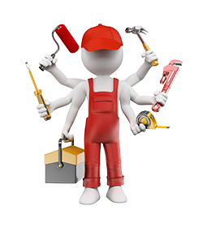
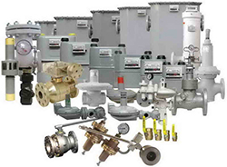
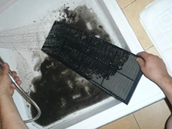
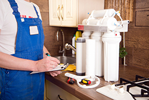

Зачем нужен сервис?
Что включает в себя сервисное обслуживание и для чего оно? Как часто нужно его проводить? Эти вопросы звучат чаще всего. Сервисное обслуживание — это проверка работы приборов, чистка, смазка, замена расходников, выявление неисправностей на начальной стадии и устранение оных. Любую современную бытовую технику желательно подвергать процедуре сервисного обслуживания как минимум раз в год, но, в зависимости от условий эксплуатации, этот срок может быть и меньше. Например, при повышенной жёсткости воды водонагревательные приборы — бойлеры, колонки и котлы, желательно проверять дважды в год, а при сильных загрязнениях или повышенной влажности воздуха такой же срок между техническим обслуживанием должен быть и у кондиционеров.

Некоторые виды сервисного обслуживания должны проводиться поставщиками услуг, например, проверять работу газового оборудования должны работники фирмы-поставщика газа. Однако, одних только «официальных» проверок недостаточно — во-первых, они должны проводиться ориентировочно раз в три года, во-вторых, эти проверки не включают ряд обязательных процедур, например, очистку водонагревателей от накипи, промывку, мелкий ремонт и точную настройку. За всем этим необходимо обращаться к специалистам сервисных центров.

Сервисное обслуживание кондиционеров включает диагностику, чистку, смазку, промывку внутренних и внешних панелей, дозаправку и устранение неполадок. Производить сервисное обслуживание необходимо как минимум один раз в год — фильтры кондиционеров захватывают всю находящуюся в воздухе пыль, грязь, а также различные взвеси. При включении кондиционера с забившимися фильтрами, вся эта грязь будет выдуваться в воздух.

Производить обслуживание систем водоочистки и водоподготовки в нашем регионе желательно не реже чем раз в полгода — в связи с повышенной жёсткостью воды, фильтры необходимо менять чаще, чем указано в инструкции по эксплуатации. Часть работ может быть выполнена самостоятельно, так, большинство современных систем бытовой водоочистки позволяют заменить фильтры или дозаправить расходники буквально в несколько движений, однако чистку и диагностику оборудования должен проводить исключительно мастер.
Таким образом, сервисное обслуживание — это профилактика и мелкий ремонт различных видов техники. Часть этих работ производит продающая компания, часть можно сделать самостоятельно, а какую-то часть необходимо доверить мастеру сервисного центра. Качественная и своевременная профилактика может значительно увеличить срок жизни прибора и избежать серьёзных поломок.